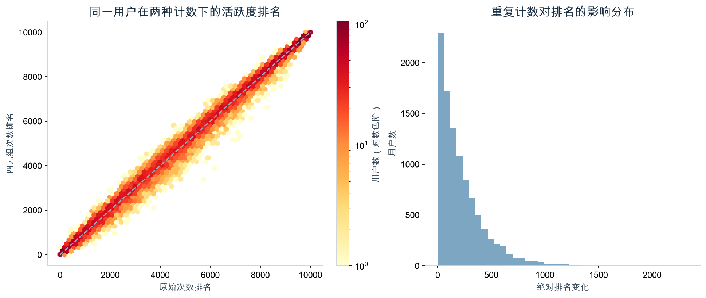

微软商城用户行为分析 · 2026-10-30
从EDA发现问题，再构建特征
基线26幅图之外，新增8幅深入分析图。数据保留全部有效原记录，每用户小时超过90条只标记。下方搜索只筛选图组，不改变统计样本。
看板一基线 · 445项特征字典 · 下载Excel · 口径与分析说明
有加购用户的未来购买比例在分层标准化后仍高出6.38、9.47、8.77个百分点；不能解释为加购导致购买。原记录/四元组用户前10%重合91.4%。SVD在最新候选对中可用约23.02%，需要后续消融验证。
显示8组图表
原记录与四元组口径敏感性
用户排名总体接近，但前10%人群仍有8.6%不同，不能据此删除同小时记录。

分层标准化明细
difference_percentage_points为百分点；population_coverage是纳入充分支持分层的人群比例。
下载全部明细
下一步探索
- 保留/不使用同键次数特征时，未来标签关联是否稳定？
- 加购信号在冷商品、不同类目和不同历史窗口是否一致？
- 首选类目集中与广泛探索用户，购买路径有何差异？
- 补充训练历史或滚动拟合后，SVD覆盖与效果能否改善？必须在各训练折内部拟合。
观测期无中国大陆法定节假日，无法比较节假日效应。相关性、分群与序列均受31天、小时精度、无金额/订单/曝光限制。